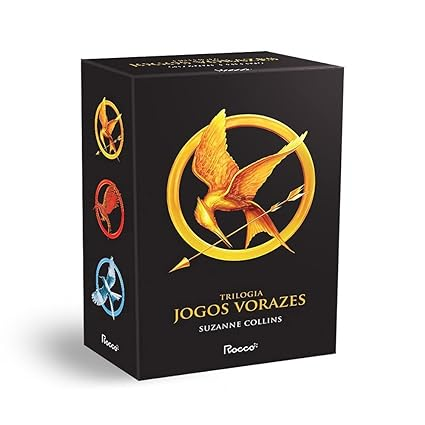

Jogos Vorazes Triologia
Os três volumes da série Jogos Vorazes, pioneira na escrita distópica, a trilogia Jogos Vorazes se passa em um futuro pós-guerras e destruição, em um local chamado de Panem, dividido em treze Distritos, que são controlados pela Capital, totalmente autoritária. Um dia, o Distrito 13 se rebela, mas acaba sendo destruído. Para punir os demais Distritos e evitar novas rebeliões, a Capital cria os Jogos Vorazes, um reality show anual em que distrito deve ceder, por meio do sorteio, um menino e uma menina entre 12 e 18 anos para entrar numa arena para lutar. Apenas um sobrevive.